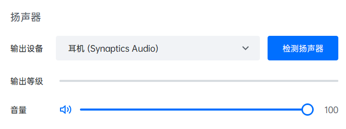
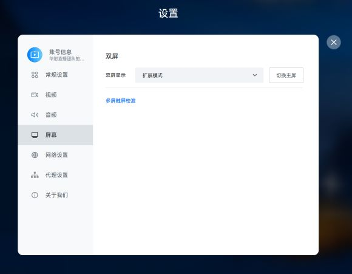
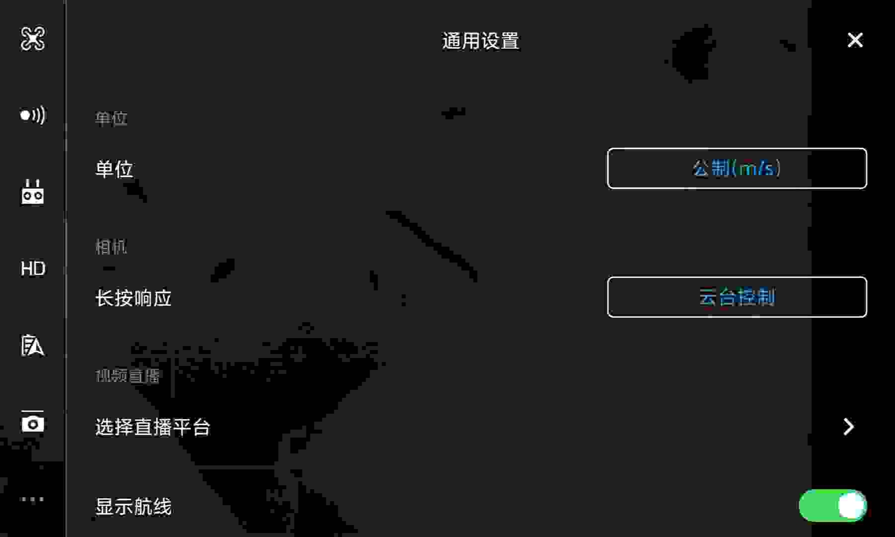
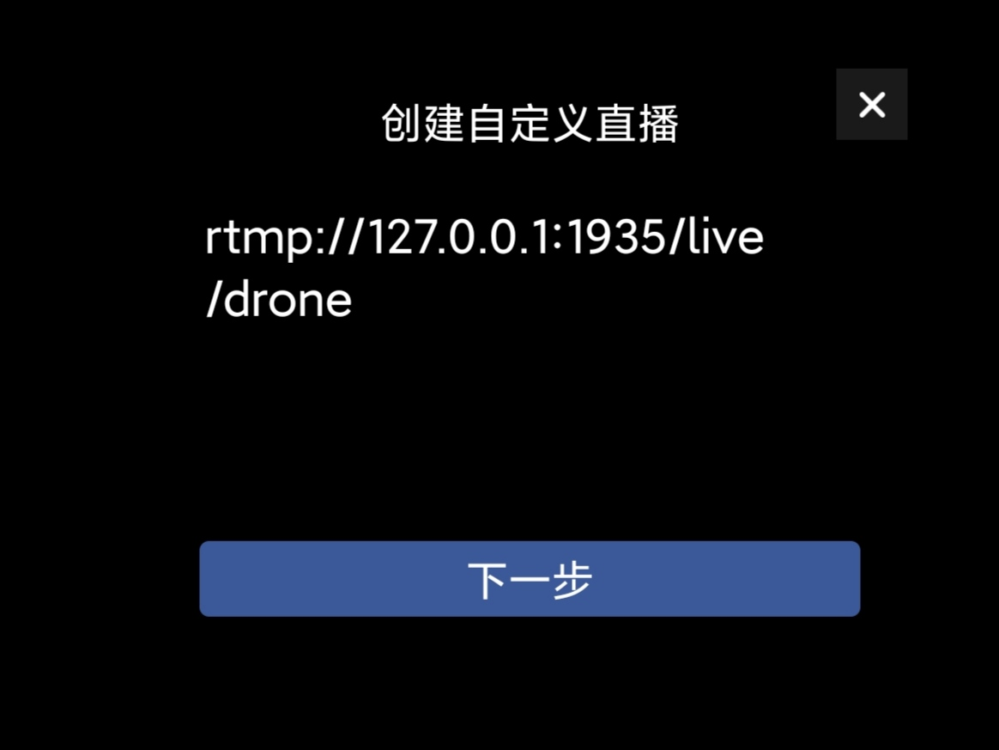
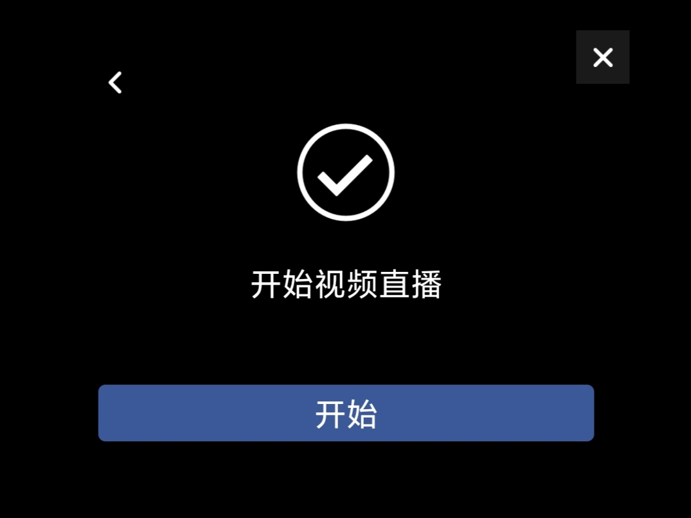
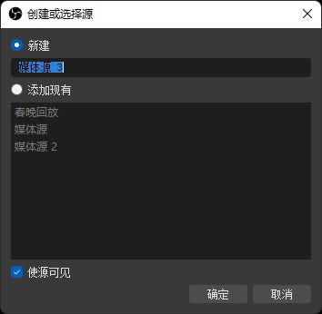
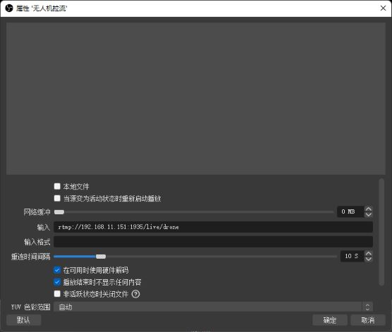
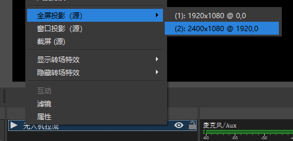

拍摄组线路组电源网线摄像机设置SDI的level问题技术组直播间网络设备连接采集卡声音采集采集卡颜色问题采集卡信号问题歌词显示问题校友连线连线配置电脑配置腾讯会议Rooms配置电子调音台配置矩阵设置现场工作故障排除提升无人机信号连接准备硬件手机软件电脑软件连线配置服务器配置大疆飞控软件设置OBS 配置提升其它技术舞台干声处理接线配置电子调音台配置切换台配置现场声的收录连线配置
拍摄组
线路组
本部分内容系原有线路组技术手册/线路组课程的补充，默认读者已具有相关基础知识。
电源
13.0购置了大量电线，电源线的铺设一般沿着光纤的线槽而不用额外加槽。注意不同长短电源线的配合使用。
另外，由于直播间内的电源在本届被告知存在漏电现象，会导致跳闸、与音控室的用电设备冲突，因此采用直播间门口的应急灯的应急电源，望周知。
网线
网线有连接器，但是建议尽量减少转接次数减少带宽损耗。
摄像机设置
摄像机在Blackmagic的官网有说明书，里面有详细功能的介绍。
需要特别注意设置的有：
- 摄影机编号、子机编号、切换台编号有没有对应
- 输出接口是哪个
- 输出SDI的level，关于level的设置问题后面会讲
- 输出画质和频率
SDI的level问题
当使用 SDI 的较高画质时（一般包括 1080p50/1080p59.94/1080p60 ），其信号又分为 Level A和 Level B 两种类型，互不兼容。以下表格列出了我们的一些设备可以接受的类型：
| 设备 | 输入 Level | 备注 |
|---|---|---|
| 威固无线图传 | A、B | 不确定，是否支持 B 还需测试 |
| 小玛 400S Pro 无线图传 | A、B | |
| BMD光端机子机 (Blackmagic Camera Converter) | B | |
| BMD切换台 (ATEM Production Studio 4K) | B | |
| 租赁的图传 | A、B | 不确定，需要测试 |
以下表格列出了我们的一些设备可以输出的类型：
| 设备 | 输出 Level | 备注 |
|---|---|---|
| 电视台DV机 (AG-DVX200MC) | A | |
| BMD摄影机 (URSA) | A、B | 可调 |
| 威固无线图传 | A | |
| 小玛 400S Pro 无线图传 | A | |
| 租赁的图传 | A |
从上面两个表格不难发现，BMD 公司普遍采用 Level-B 标准，而其他厂商大多采用 Level-A 标准，因此 BMD 的设备和其他设备连接可能会出现困难。例如，电视台DV机无法通过 SDI 向子机发送 1080p50 信号；无线图传接收端无法通过 SDI 将信号送进切换台。
注意，Level-A/B 的区分仅限于使用 SDI 传输 1080p50 以上（2160P未经过测试）的信号。也就是说，使用 HDMI 传输或者使用 1080p50 以下的画质（如 1080i50 ）不受 Level-A/B 的影响。
因此，当遇到 Level-A/B 不相同时，可以采取换用 HDMI 连接或降低画质的方法解决，需要在直播实践中特别留意。
技术组
直播间网络设备连接
我们直播所用到的设备都是通过同一个局域网进行连接，首先我们来介绍直播间的网络连接：
路由器的接法是WAN进LAN出，即墙里出来的网线连路由器的WAN口，而其他所有需要用到路由器网络的设备则是连接到路由器的LAN口。
交换机的接口要连接到路由器的LAN口，可以把交换器理解为路由器LAN口的扩展。
使用交换器任意一个接口与切换台，导播台，电子调音台连接。
计算机在连接直播间的网络（无线或有线）后均可以连接切换台和音控台。
当路由器由于意外情况断网时，电脑和手机有可能会自动断开 Wi-Fi 连接，因此请尽量使用有线网络连接。

采集卡声音采集
采集卡声音采集历来是一个问题，下面将介绍采集卡采声的几个方法
- 直连：使用圆刚或者绿联的采集卡直接进行采集，在OBS音频输出模式中选择输出到桌面音频（绿联不需要），然后添加音频输出采集，即可采集到HDMI接收到的舞台干声，不推荐。
- 采集卡加音频线：众所周知，在矩阵的输出口上，有音频线接口，用音频线连接矩阵以及用来上传的计算机，使用线路采集即可采集到声音，较稳定。
- 采集卡加采集卡：圆刚采集直播画面，绿联采集直播声音，方法如单个采集卡.
采集卡颜色问题
在OBS视频采集设备的滤镜中，看到下方的效果滤镜，选择色彩校正，一般在彩排时校正完成。
注意：OBS添加滤镜会直接影响输出画面，即使你打开了“工作室模式”，也会同时影响预监和输出两个画面。解决方法是分别调整两个采集卡的滤镜。比如圆钢采集卡On Program时就调整绿联采集卡，然后把绿联采集卡On Program上去，再调整圆钢采集卡的滤镜。
采集卡信号问题
使用HDMI将信号输入采集卡，再通过 USB3.0 传入上传的计算机，在OBS的来源中选择视频采集设备，特别注意，圆刚的采集卡的分辨率/帧率类型要选择自定义，否则会出现无信号的状况，绿联随意，采声同上。
歌词显示问题
在各种节目中，我们总能遇到奇葩的歌词，下面以今年的花之二重唱为例，讲述非中英文歌曲在放歌词时因听不懂而不能正常播放的处理方法
- 找选手沟通，询问歌词大意，或者全套歌词，输入到OBS上的文本，让其进行滚动播放。
- 我们需要将OBS的画面投影到现场屏幕上，否则现场无法看到滚动歌词。
- 使用矩阵连接电脑，将信号输出到大屏幕，在OBS中选择全屏投影，即可将OBS的program画面传输到现场大屏幕。
校友连线
校友连线是华附春晚亮点节目之一，也是直播团队的中心工作之一。2021年我们采用了腾讯会议Rooms+采集卡方案。
连线

用
3.5mm公-卡侬公线连接电脑和音响组的现场调音台。用
6.5mm公-6.5mm公线连接现场调音台输出和电子调音台输入，可以使用直播间预埋的线。用
双路卡侬公-卡侬母线连接电子调音台输出和切换台输入。用
HDMI连接切换台 Program输出 和矩阵输入。用
HDMI连接矩阵输出和采集卡，用USB连接采集卡和电脑。用
HDMI连接矩阵输出到现场大屏控制器。现场调音台、现场大屏的连接可以与凌燃燃老师沟通。
配置
电脑配置
- 将电脑输出画质更改为与切换台一致.
- 将默认音频输入设备更改为采集卡输入（如
Capture Audio）. - 将默认音频输出设备更改为耳机孔输出.
腾讯会议Rooms配置
将音频输出设为耳机孔输出（如
耳机 (Synaptics Audio)）.
图 3.5.2.2-1 输出设备设置 音频输入设为采集卡输入（如
Capture Audio)；在高级设置中，启用“使用设备原声”，开启“回声消除”，关闭“音频降噪”.
摄像头输入设为采集卡输入（如
Capture Video）.
将双屏设置为“扩展模式”.

为防止意外，关闭“入会开启摄像头”“入会开启麦克风”“语音激励”“隐藏非视频参会者”；为获得更纯净的画面，关闭“会中常驻投屏码”.

图3.5.2.2-5 常规设置 软件可能会经常提示“麦克风、扬声器、摄像头未经过腾讯会议Rooms硬件认证”等，忽略即可。
电子调音台配置
在电子调音台中，我们要确保现场调音台的输入能正确输出到 Main LR。
电子调音台相关配置可以请求音组协助，但还是建议技术组同学学习电子调音台基本操作方法。产品官网
矩阵设置
在矩阵中，将切换台Program输出正确映射到采集卡和现场大屏。
经过以上配置，参会者的声音能输出到现场的音响系统，参会者的画面能显示在切换台 Multiview 画面上，能输出到 Program；现场 Program 的画面和声音能够上传腾讯会议，参会者能听到现场的声音，能看到现场的画面。这也是校友连线的基本要求。
现场工作
校友连线非常考验现场的操作和应急情况处置能力。
在主持人讲话时，提醒导播切到摄影机画面，在微信群通知下一个连线的地区。
主持人与连线地区互动时，将该地区设为焦点画面，提醒导播将画面切到校友。
出现突发故障时，第一时间使用对讲机通知主持人，立即确定故障位置并通知相关人员进行排障。
校友连线前，要进行大量的测试。必须至少一次按春晚流程进行1：1测试。同时，与校友连线负责人和主持人密切沟通，确认应急方案。
故障排除
- 信号进不了切换台：检查HDMI连线、画质。
- 现场大屏无信号：检查矩阵设置、HDMI线连接、现场大屏控制台设置。
- 校友听不到声音：检查 Program 是否有声音，检查腾讯会议设置，检查麦克风是否关闭。
- 现场听不到声音：检查腾讯会议输出设置，检查现场调音台设置，检查连线。
提升
由上面的一系列配置不难发现，腾讯会议Rooms输出的校友声音最终又送回了腾讯会议Rooms输入里，我们依靠“回声消除”才能勉强不造成直播事故。因此 HFLive14.0+ 一定要不断尝试创新，在确保稳定性的前提下努力提高质量。以下建议供参考：
优化接线方案

尽量让校友多进行几次测试，特别是要让他们试一下像春晚那样大声喊的时候会不会炸麦。测试的时候要叫上音组的同学，也让他们演练一下到时候的音量控制。
让校友尽量佩戴耳机，或者让他们的扬声器尽量远离麦克风，防止回荡。（比如另外用一台手机入会来听现场声音，电脑来录画面和声音）.
无人机信号连接
无人机机位主要在小歌手时使用，其独特的视角能大幅提高直播质量。2021年，HFLive13.0 使用的是DJI Mavic 2 + RTMP局域网传输 + OBS拉流 + 光端机 + 切换台方案，实现720P传输。
该方案适用于任何大部分大疆无人机，此处以DJI Mavic Pro 为例。
准备
硬件
- DJI Mavic Pro 无人机一台
- 遥控器
- 手机
- 电脑
- 光端机子机 (Blackmagic Camera Converter)
- 光端机母机 (Blackmagic Studio Converter)
- 切换台 (ATEM Production Studio 4K)
手机软件
- DJI Go 4
- RTMP-Server （蓝奏云下载 访问码: f52x）或 OneDrive （可能需要✈）
电脑软件
- OBS（Open Broadcast Software）
连线
相关连线图如下：
- 参考无人机使用说明，将手机连接到无人机遥控器。
- 将手机和电脑连到同一局域网下（同Wi-Fi）.
- 用
HDMI连接电脑和光端机子机，注意更改画质。 - 用光纤连接光端机子机和母机（请线组协助）.
- 用
SDI将光端机母机连接到切换台。
配置
服务器配置
- 打开 RTMP-Server 软件，开启服务。

- 设置，防止手机杀后台。（请在搜索引擎搜索：
xx品牌手机如何防止杀后台）
大疆飞控软件设置
- 打开DJI Go 4，连接飞行器。

- 打开设置，“选择直播平台”

- 填入推流地址，开始直播


- 推流开始后，能在左上角看到相关提示。若能看到帧率值则代表直播正常，若FPS为0则代表推流失败，需检查服务器状态和推流参数。
OBS 配置
启动OBS，新建媒体源。

在媒体源设置中，取消勾选“本地文件”，“网络缓冲”设置为
0 MB，“输入”设置为rtmp://手机IP地址/live/drone，确认设置。

- 经过以上设置后即可在OBS窗口中看到无人机画面

- 右键源，全屏投影到第二屏幕，这时就能在切换台Multiview中看到无人机的画面了。

提升
该方案成本低，但也有不少缺点，包括延迟高、配置麻烦、稳定性不佳、画质低。因此，我们建议 HFLive14.0+ 换用更好的方案。以下两个方案供参考：
- 租用/购买大疆带屏遥控器，其能输出HDMI信号
- 使用大疆精灵系列无人机，购买遥控器HDMI输出模块
其它技术
舞台干声处理
舞台干声，是指现场调音台输出的各种声音，主要包括：现场各种表演麦克风、表演音乐等。舞台干声是的收录的处理是直播的重要内容之一。如果没有声音，画面拍得再好也是一次失败的直播。直播收声原理如下图所示：
接线
- 使用两路
6.5mm-6.5mm音频线连接现场调音台输出和电子调音台的输入。HFLive13.0使用的是在墙体内预埋的音频线，连接现场调音台的AUX3/4输出。 - 使用两路
卡侬（XLR）线连接电子调音台的Main LR输出和切换台的输入。
配置
电子调音台配置
调整电子调音台，使输入的舞台干声能正常输出到Main LR.
切换台配置
在切换台软件控制面板的音频面板中，启用来自XLR的声音，调整音量大小。
经过以上设置后，舞台干声即可进入直播 Program 中。
现场声的收录
现场声音的收录是直播声音的重要一环，HFLive12.0和13.0在这方面有所欠缺，HFLive14.0+ 务必重视直播的声音！
连线
现场声的连线非常简单，只需要将一只（最好是两只）麦克风连接到摄影机或光端机子机上，声音信号就会随视频一起传回切换台。
配置
若连接至摄影机，需要在摄影机中设置音频为 XLR 输入，具体参考 URSA 说明书 第1580页。
若连接至子机，子机会自动采用外接的麦克风，具体参考 子机说明书 第138页连接音频部分。
无论采取哪种连接，都要在切换台中启用该路信号的音频，并调整音量大小，具体参考 切换台说明书 第1217页。